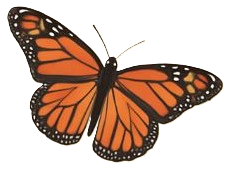
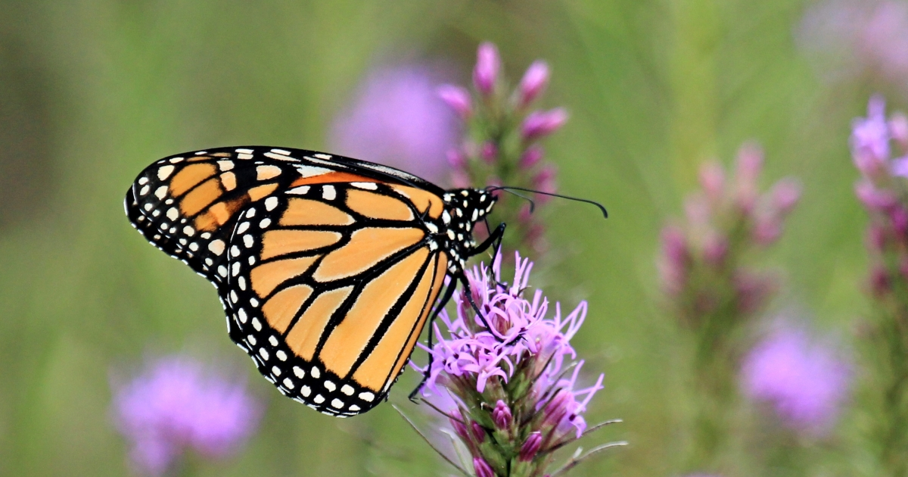
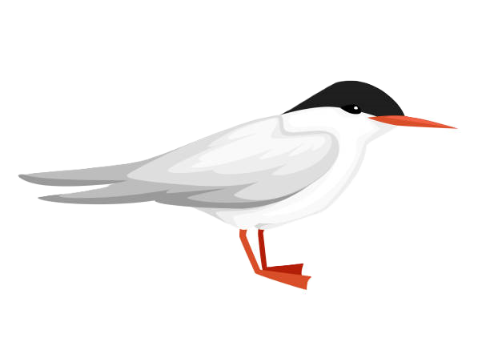
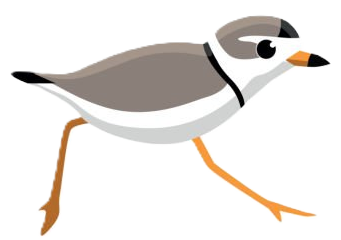
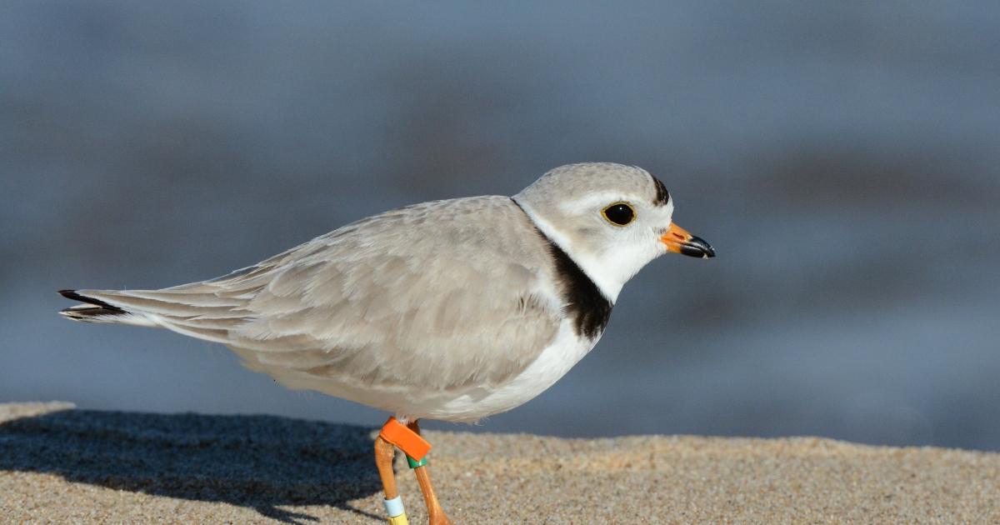

Monarch Butterfly
Danaus plexippus
Special Concern
- Vital pollinator, migration at risk!
- Migration covers 3,000 miles

Quick Facts
- Habitat: Wetlands, grasslands, coasts, mountains, urban areas
- Diet: Caterpillars eat milkweed; adults feed on flower nectar
- Life Span: 2–5 weeks
- Size: Wingspan 3–4 in (7–10 cm)

Roseate Tern
Sterna dougallii dougallii
Endangered
- No critical habitat has been designated for this species!

Quick Facts
- Habitat: Coastal beaches and salt marshes
- Diet: Small fish caught by plunge-diving
- Life Span: 15–25 years
- Note: Colonial nester; sensitive to disturbance

Piping Plover
Charadrius melodus
Threatened
- Nest on sandy beaches and dunes; vulnerable to disturbance!

Quick Facts
- Habitat: Coastal, Lake, River or Stream
- Diet: Small invertebrates along the shore
- Life Span: 5-6 years; some can live up to 11 years
- Size: ~7 inches (17 centimeters) long